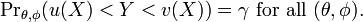
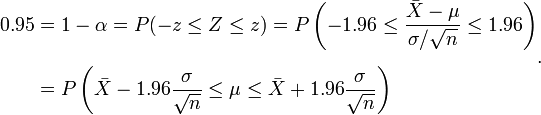
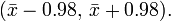

Confidence interval
In statistics, a confidence interval (CI) is a kind of interval estimate of a population parameter and is used to indicate the reliability of an estimate. It is an observed interval (i.e. it is calculated from the observations), in principle different from sample to sample, that frequently includes the parameter of interest, if the experiment is repeated. How frequently the observed interval contains the parameter is determined by the confidence level or confidence coefficient. More specifically, the meaning of the term "confidence level" is that, if confidence intervals are constructed across many separate data analyses of repeated (and possibly different) experiments, the proportion of such intervals that contain the true value of the parameter will match the confidence level; this is guaranteed by the reasoning underlying the construction of confidence intervals.[1][2][3]
Confidence intervals consist of a range of values (interval) that act as good estimates of the unknown population parameter. However, in rare cases, none of these values may cover the value of the parameter. The level of confidence of the confidence interval would indicate the probability that the confidence range captures this true population parameter given a distribution of samples. It does not describe any single sample. This value is represented by a percentage, so when we say, "we are 99% confident that the true value of the parameter is in our confidence interval", we express that 99% of the observed confidence intervals will hold the true value of the parameter. After a sample is taken, the population parameter is either in the interval made or not, there is no chance. The level of confidence is set by the researcher (not determined by data) . If a corresponding hypothesis test is performed, the confidence level corresponds with the level of significance, i.e. a 95% confidence interval reflects a significance level of 0.05, and the confidence interval contains the parameter values that, when tested, should not be rejected with the same sample. Greater levels of confidence give larger confidence intervals, and hence less precise estimates of the parameter. Confidence intervals of difference parameters not containing 0 imply that that there is a statistically significant difference between the populations.
Certain factors may affect the confidence interval size including size of sample, level of confidence, and population variability. A larger sample size normally will lead to a better estimate of the population parameter.
A confidence interval does not predict that the true value of the parameter has a particular probability of being in the confidence interval given the data actually obtained. (An interval intended to have such a property, called a credible interval, can be estimated using Bayesian methods; but such methods bring with them their own distinct strengths and weaknesses).
Contents[hide] |
[edit] Conceptual basis
[edit] Introduction
Interval estimates can be contrasted with point estimates. A point estimate is a single value given as the estimate of a population parameter that is of interest, for example the mean of some quantity. An interval estimate specifies instead a range within which the parameter is estimated to lie. Confidence intervals are commonly reported in tables or graphs along with point estimates of the same parameters, to show the reliability of the estimates.
For example, a confidence interval can be used to describe how reliable survey results are. In a poll of election voting-intentions, the result might be that 40% of respondents intend to vote for a certain party. A 90% confidence interval for the proportion in the whole population having the same intention on the survey date might be 38% to 42%. From the same data one may calculate a 95% confidence interval, which might in this case be 36% to 44%. A major factor determining the length of a confidence interval is the size of the sample used in the estimation procedure, for example the number of people taking part in a survey.
[edit] Relationship with other statistical topics
[edit] Statistical hypothesis testing
Confidence intervals are closely related to statistical significance testing. For example, if for some estimated parameter one wants to test the null hypothesis that = 0 against the alternative that 0, then this test can be performed by determining whether the confidence interval for contains 0.
More generally, given the availability of a hypothesis testing procedure that can test the null hypothesis = 0 against the alternative that 0 for any value of 0, then a confidence interval with confidence level = 1 can be defined as containing any number 0 for which the corresponding null hypothesis is not rejected at significance level .[4]
In consequence,[clarification needed] if the estimates of two parameters (for example, the mean values of a variable in two independent groups of objects) have confidence intervals at a given value that do not overlap, then the difference between the two values is significant at the corresponding value of . However, this test is too conservative. If two confidence intervals overlap, the difference between the two means still may be significantly different.[5][6]
[edit] Confidence region
Confidence regions generalize the confidence interval concept to deal with multiple quantities. Such regions can indicate not only the extent of likely sampling errors but can also reveal whether (for example) it is the case that if the estimate for one quantity is unreliable then the other is also likely to be unreliable. See also confidence bands.
In applied practice, confidence intervals are typically stated at the 95% confidence level.[7] However, when presented graphically, confidence intervals can be shown at several confidence levels, for example 50%, 95% and 99%.
[edit] Statistical theory
[edit] Definition
Let X be a random sample from a probability distribution with statistical parameters , which is a quantity to be estimated, and , representing quantities that are not of immediate interest. A confidence interval for the parameter , with confidence level or confidence coefficient , is an interval with random endpoints (u(X), v(X)), determined by the pair of random variables u(X) and v(X), with the property:
The quantities in which there is no immediate interest are called nuisance parameters, as statistical theory still needs to find some way to deal with them. The number , with typical values close to but not greater than 1, is sometimes given in the form 1 (or as a percentage 100%(1 )), where is a small non-negative number, close to 0.
Here Pr, indicates the probability distribution of X characterised by (, ). An important part of this specification is that the random interval (u(X), v(X)) covers the unknown value with a high probability no matter what the true value of actually is.
Note that here Pr, need not refer to an explicitly given parameterised family of distributions, although it often does. Just as the random variable X notionally corresponds to other possible realizations of x from the same population or from the same version of reality, the parameters (, ) indicate that we need to consider other versions of reality in which the distribution of X might have different characteristics.
In a specific situation, when x is the outcome of the sample X, the interval (u(x), v(x)) is also referred to as a confidence interval for . Note that it is no longer possible to say that the (observed) interval (u(x), v(x)) has probability to contain the parameter . This observed interval is just one realization of all possible intervals for which the probability statement holds.
[edit] Approximate confidence intervals
In many applications, confidence intervals that have exactly the required confidence level are hard to construct. But practically useful intervals can still be found: the rule for constructing the interval may be accepted as providing a confidence interval at level if
to an acceptable level of approximation. Alternatively, some authors[8] simply require that
which is useful if the probabilities are only partially identified, or imprecise.
[edit] Comparison to prediction intervals
A prediction interval for a random variable is defined similarly to a confidence interval for a statistical parameter. Consider an additional random variable Y which may or may not be statistically dependent on the random sample X. Then (u(X), v(X)) provides a prediction interval for the as-yet-to-be observed value y of Y if
- 
Here Pr, indicates the joint probability distribution of the random variables (X, Y), where this distribution depends on the statistical parameters (, ).
[edit] Comparison to Bayesian interval estimates
A Bayesian interval estimate is called a credible interval. Using much of the same notation as above, the definition of a credible interval for the unknown true value of is, for a given ,[9]
Here is used to emphasize that the unknown value of is being treated as a random variable. The definitions of the two types of intervals may be compared as follows.
- The definition of a confidence interval involves probabilities calculated from the distribution of X for given (, ) (or conditional on these values) and the condition needs to hold for all values of (, ).
- The definition of a credible interval involves probabilities calculated from the distribution of conditional on the observed values of X = x and marginalised (or averaged) over the values of , where this last quantity is the random variable corresponding to the uncertainty about the nuisance parameters in .
Note that the treatment of the nuisance parameters above is often omitted from discussions comparing confidence and credible intervals but it is markedly different between the two cases.
In some simple standard cases, the intervals produced as confidence and credible intervals from the same data set can be identical. They are very different if informative prior information is included in the Bayesian analysis; and may be very different for some parts of the space of possible data even if the Bayesian prior is relatively uninformative.
[edit] Desirable properties
When applying standard statistical procedures, there will often be standard ways of constructing confidence intervals. These will have been devised so as to meet certain desirable properties, which will hold given that the assumptions on which the procedure rely are true. These desirable properties may be described as: validity, optimality and invariance. Of these "validity" is most important, followed closely by "optimality". "Invariance" may be considered as a property of the method of derivation of a confidence interval rather than of the rule for constructing the interval. In non-standard applications, the same desirable properties would be sought.
- Validity. This means that the nominal coverage probability (confidence level) of the confidence interval should hold, either exactly or to a good approximation.
- Optimality. This means that the rule for constructing the confidence interval should make as much use of the information in the data-set as possible. Recall that one could throw away half of a dataset and still be able to derive a valid confidence interval. One way of assessing optimality is by the length of the interval, so that a rule for constructing a confidence interval is judged better than another if it leads to intervals whose lengths are typically shorter.
- Invariance. In many applications the quantity being estimated might not be tightly defined as such. For example, a survey might result in an estimate of the median income in a population, but it might equally be considered as providing an estimate of the logarithm of the median income, given that this is a common scale for presenting graphical results. It would be desirable that the method used for constructing a confidence interval for the median income would give equivalent results when applied to constructing a confidence interval for the logarithm of the median income: specifically the values at the ends of the latter interval would be the logarithms of the values at the ends of former interval.
[edit] Methods of derivation
For non-standard applications, there are several routes that might be taken to derive a rule for the construction of confidence intervals. Established rules for standard procedures might be justified or explained via several of these routes. Typically a rule for constructing confidence intervals is closely tied to a particular way of finding a point estimate of the quantity being considered.
- Statistics
- This is closely related to the method of moments for estimation. A simple example arises where the quantity to be estimated is the mean, in which case a natural estimate is the sample mean. The usual arguments indicate that the sample variance can be used to estimate the variance of the sample mean. A naive confidence interval for the true mean can be constructed centered on the sample mean with a width which is a multiple of the square root of the sample variance.
- Likelihood theory
- Where estimates are constructed using the maximum likelihood principle, the theory for this provides two ways of constructing confidence intervals or confidence regions for the estimates.[citation needed]
- Estimating equations
- The estimation approach here can be considered as both a generalization of the method of moments and a generalization of the maximum likelihood approach. There are corresponding generalizations of the results of maximum likelihood theory that allow confidence intervals to be constructed based on estimates derived from estimating equations.[citation needed]
- Via significance testing
- If significance tests are available for general values of a parameter, then confidence intervals/regions can be constructed by including in the 100p% confidence region all those points for which the significance test of the null hypothesis that the true value is the given value is not rejected at a significance level of (1-p).[4]
- Bootstrapping
- In situations where the distributional assumptions for that above methods are uncertain or violated, resampling methods allow construction of confidence intervals or prediction intervals. The observed data distribution and the internal correlations are used as the surrogate for the correlations in the wider population.
[edit] Examples
[edit] Practical example

A machine fills cups with margarine, and is supposed to be adjusted so that the content of the cups is 250 g of margarine. As the machine cannot fill every cup with exactly 250 g, the content added to individual cups shows some variation, and is considered a random variable X. This variation is assumed to be normally distributed around the desired average of 250 g, with a standard deviation of 2.5 g. To determine if the machine is adequately calibrated, a sample of n = 25 cups of margarine are chosen at random and the cups are weighed. The resulting measured masses of margarine are X1, ..., X25, a random sample from X.
To get an impression of the expectation , it is sufficient to give an estimate. The appropriate estimator is the sample mean:
The sample shows actual weights x1, ..., x25, with mean:
If we take another sample of 25 cups, we could easily expect to find mass values like 250.4 or 251.1 grams. A sample mean value of 280 grams however would be extremely rare if the mean content of the cups is in fact close to 250 grams. There is a whole interval around the observed value 250.2 grams of the sample mean within which, if the whole population mean actually takes a value in this range, the observed data would not be considered particularly unusual. Such an interval is called a confidence interval for the parameter . How do we calculate such an interval? The endpoints of the interval have to be calculated from the sample, so they are statistics, functions of the sample X1, ..., X25 and hence random variables themselves.
In our case we may determine the endpoints by considering that the sample mean X from a normally distributed sample is also normally distributed, with the same expectation , but with a standard error of:
By standardizing, we get a random variable:
dependent on the parameter to be estimated, but with a standard normal distribution independent of the parameter . Hence it is possible to find numbers z and z, independent of , between which Z lies with probability 1 , a measure of how confident we want to be.
We take 1 = 0.95, for example. So we have:

The number z follows from the cumulative distribution function, in this case the cumulative normal distribution function:
and we get:
- 
In other words, the lower endpoint of the 95% confidence interval is:
and the upper endpoint of the 95% confidence interval is:
With the values in this example, the confidence interval is:
This might be interpreted as: with probability 0.95 we will find a confidence interval in which we will meet the parameter between the stochastic endpoints
and
This does not mean that there is 0.95 probability of meeting the parameter in the interval obtained by using the currently computed value of the sample mean,
- 
Instead, every time the measurements are repeated, there will be another value for the mean X of the sample. In 95% of the cases will be between the endpoints calculated from this mean, but in 5% of the cases it will not be. The actual confidence interval is calculated by entering the measured masses in the formula. Our 0.95 confidence interval becomes:

In other words, the 95% confidence interval is between the lower endpoint 249.22 g and the upper endpoint 251.18 g.
As the desired value 250 of is within the resulted confidence interval, there is no reason to believe the machine is wrongly calibrated.
The calculated interval has fixed endpoints, where might be in between (or not). Thus this event has probability either 0 or 1. One cannot say: "with probability (1 ) the parameter lies in the confidence interval." One only knows that by repetition in 100(1 ) % of the cases, will be in the calculated interval. In 100 % of the cases however it does not. And unfortunately one does not know in which of the cases this happens. That is why one can say: "with confidence level 100(1 ) %, lies in the confidence interval."
The figure on the right shows 50 realizations of a confidence interval for a given population mean . If we randomly choose one realization, the probability is 95% we end up having chosen an interval that contains the parameter; however we may be unlucky and have picked the wrong one. We will never know; we are stuck with our interval.
[edit] Theoretical example
Suppose {X1, ..., Xn} is an independent sample from a normally distributed population with (parameters) mean and variance 2. Let

{kind=link}
Where X is the sample mean, and S2 is the sample variance. Then
has a Student's t-distribution with n 1 degrees of freedom.[10] Note that the distribution of T does not depend on the values of the unobservable parameters and 2; i.e., it is a pivotal quantity. Suppose we wanted to calculate a 95% confidence interval for . Then, denoting c as the 97.5th percentile of this distribution,
(Note: "97.5th" and "0.95" are correct in the preceding expressions. There is a 2.5% chance that T will be less than c and a 2.5% chance that it will be larger than +c. Thus, the probability that T will be between c and +c is 95%.)
Consequently
and we have a theoretical (stochastic) 95% confidence interval for .
After observing the sample we find values x for X and s for S, from which we compute the confidence interval
an interval with fixed numbers as endpoints, of which we can no longer say there is a certain probability it contains the parameter ; either is in this interval or isn't.
[edit] Relation to hypothesis testing
While the formulations of the notions of confidence intervals and of statistical hypothesis testing are distinct they are in some senses related and to some extent complementary. While not all confidence intervals are constructed in this way, one general purpose approach to constructing confidence intervals is to define a 100(1 )% confidence interval to consist of all those values 0 for which a test of the hypothesis = 0 is not rejected at a significance level of 100%. Such an approach may not always be available since it presupposes the practical availability of an appropriate significance test. Naturally, any assumptions required for the significance test would carry over to the confidence intervals.
It may be convenient to make the general correspondence that parameter values within a confidence interval are equivalent to those values that would not be rejected by a hypothesis test, but this would be dangerous. In many instances the confidence intervals that are quoted are only approximately valid, perhaps derived from "plus or minus twice the standard error", and the implications of this for the supposedly corresponding hypothesis tests are usually unknown.
It is worth noting, that the confidence interval for a parameter is not the same as the acceptance region of a test for this parameter, as is sometimes thought. How could it be? The confidence interval is part of the parameter space, whereas the acceptance region is part of the sample space. For the same reason the confidence level is not the same as the complementary probability of the level of significance.
[edit] Meaning and interpretation
For users of frequentist methods, various interpretations of a confidence interval can be given.
- The confidence interval can be expressed in terms of samples (or repeated samples): "Were this procedure to be repeated on multiple samples, the calculated confidence interval (which would differ for each sample) would encompass the true population parameter 90% of the time."[1] Note that this need not be repeated measurement of the same sample, just repeated sampling.[2]
- The explanation of a confidence interval can amount to something like: "The confidence interval represents values for the population parameter for which the difference between the parameter and the observed estimate is not statistically significant at the 10% level".[11] In fact, this relates to one particular way in which a confidence interval may be constructed.
- The probability associated with a confidence interval may also be considered from a pre-experiment point of view, in the same context in which arguments for the random allocation of treatments to study items are made. Here the experimenter sets out the way in which they intend to calculate a confidence interval and know, before they do the actual experiment, that the interval they will end up calculating has a certain chance of covering the true but unknown value.[3] This is very similar to the "repeated sample" interpretation above, except that it avoids relying on considering hypothetical repeats of a sampling procedure that may not be repeatable in any meaningful sense. See Neyman construction.
In each of the above, the following applies: If the true value of the parameter lies outside the 90% confidence interval once it has been calculated, then an event has occurred which had a probability of 10% (or less) of happening by chance.
[edit] Alternatives and critiques
Confidence intervals are one method of interval estimation, and the most widely used in frequentist statistics. An analogous concept in Bayesian statistics is credible intervals, while an alternative frequentist method is that of prediction intervals which, rather than estimating parameters, estimate the outcome of future samples. For other approaches to expressing uncertainty using intervals, see interval estimation.
There is disagreement about which of these methods produces the most useful results: the mathematics of the computations are rarely in questionconfidence intervals being based on sampling distributions, credible intervals being based on Bayes' theorembut the application of these methods, the utility and interpretation of the produced statistics, is debated.
Users of Bayesian methods, if they produced an interval estimate, would in contrast to confidence intervals, want to say "My degree of belief that the parameter is in fact in this interval is 90%,"[12] while users of prediction intervals would instead say "I predict that the next sample will fall in this interval 90% of the time."[citation needed]
Confidence intervals are an expression of probability and are subject to the normal laws of probability. If several statistics are presented with confidence intervals, each calculated separately on the assumption of independence, that assumption must be honoured or the calculations will be rendered invalid. For example, if a researcher generates a set of statistics with intervals and selects some of them as significant, the act of selecting invalidates the calculations used to generate the intervals.
[edit] Philosophical issues
The principle behind confidence intervals was formulated to provide an answer to the question raised in statistical inference of how to deal with the uncertainty inherent in results derived from data that are themselves only a randomly selected subset of an entire statistical population of possible datasets. There are other answers, notably that provided by Bayesian inference in the form of credible intervals. The idea of confidence intervals is that they correspond to a chosen rule for determining the confidence bounds, where this rule is essentially determined before any data are obtained, or before an experiment is done. The criterion for choosing this rule is that, over all possible datasets that might be obtained, there is a high probability that the interval determined by the rule will include the true value of the quantity under consideration. That is a fairly straightforward and reasonable way of specifying a rule for determining uncertainty intervals. The Bayesian approach appears to offer intervals that can, subject to acceptance of an interpretation of "probability" as Bayesian probability, be interpreted as meaning that the specific interval calculated from a given dataset has a certain probability of including the true value, conditional on the data and other information available. The confidence interval approach does not allow this, since in this formulation and at this same stage, both the bounds of interval and the true values are fixed values and there is no randomness involved.
For example, in the poll example outlined in the introduction, one common-sense interpretation of a "95% interval" might be that readers of this information can be 95% confident that the actual number of voters intending to vote for the party in question is between 36% to 44%. However, this is technically incorrect. The actual meaning of confidence levels and confidence intervals is rather more subtle. In the above case, a correct interpretation would be as follows: If the polling were repeated a large number of times (you could produce a 95% confidence interval for your polling confidence interval), each time generating about a 95% confidence interval from the poll sample, then approximately 95% of the generated intervals would contain the true percentage of voters who intend to vote for the given party. Each time the polling is repeated, a different confidence interval is produced; hence, it is not possible to make absolute statements about probabilities for any one given interval. For more information, see the section on meaning and interpretation.
The questions of how an interval expressing uncertainty in an estimate might be formulated, and of how such intervals might be interpreted, are not strictly mathematical problems and are philosophically problematic.[13] Mathematics can take over once the basic principles of an approach to inference have been established, but it has only a limited role[original research?] in saying why one approach should be preferred to another.[citation needed]
[edit]
An approximate confidence interval for a population mean can be constructed for random variables that are not normally distributed in the population, relying on the central limit theorem, if the sample sizes and counts are big enough. The formulae are identical to the case above (where the sample mean is actually normally distributed about the population mean). The approximation will be quite good with only a few dozen observations in the sample if the probability distribution of the random variable is not too different from the normal distribution (e.g. its cumulative distribution function does not have any discontinuities and its skewness is moderate).
One type of sample mean is the mean of an indicator variable, which takes on the value 1 for true and the value 0 for false. The mean of such a variable is equal to the proportion that have the variable equal to one (both in the population and in any sample). This is a useful property of indicator variables, especially for hypothesis testing. To apply the central limit theorem, one must use a large enough sample. A rough rule of thumb is that one should see at least 5 cases in which the indicator is 1 and at least 5 in which it is 0. Confidence intervals constructed using the above formulae may include negative numbers or numbers greater than 1, but proportions obviously cannot be negative or exceed 1. Additionally, sample proportions can only take on a finite number of values, so the central limit theorem and the normal distribution are not the best tools for building a confidence interval. See "Binomial proportion confidence interval" for better methods which are specific to this case.
[edit] See also
- Confidence band
- Confidence interval for binomial distribution
- Confidence interval for mean of the Poisson distribution
- Confidence interval for mean of the Exponential distribution
- Confidence interval for exponent of the Power law distribution
- Confidence intervals for mean and variance of the Normal distribution
- Error bar
- p-value
- Robust confidence intervals
- Tolerance interval
- CLs upper limits
[edit] References
- ^ a b Cox D.R., Hinkley D.V. (1974) Theoretical Statistics, Chapman & Hall, p49, p209
- ^ a b Kendall, M.G. and Stuart, D.G. (1973) The Advanced Theory of Statistics. Vol 2: Inference and Relationship, Griffin, London. Section 20.4
- ^ a b Neyman, J. (1937) "Outline of a Theory of Statistical Estimation Based on the Classical Theory of Probability", Philosophical Transactions of the Royal Society of London A, 236, 333380.
- ^ a b Cox D.R., Hinkley D.V. (1974) Theoretical Statistics, Chapman & Hall, Section 7.2(iii)
- ^ Goldstein, H., & Healey, M.J.R. (1995). "The graphical presentation of a collection of means." Journal of the Royal Statistical Society, 158, 17577.
- ^ Wolfe R, Hanley J (Jan 2002). "If we're so different, why do we keep overlapping? When 1 plus 1 doesn't make 2". CMAJ 166 (1): 656. PMC 99228. PMID 11800251. http://www.cmaj.ca/cgi/pmidlookup?view=long&pmid=11800251.
- ^ Zar, J.H. (1984) Biostatistical Analysis. Prentice Hall International, New Jersey. pp 4345
- ^ George G. Roussas (1997) A Course in Matheamtical Statistics, 2nd Edition, Academic Press, p397
- ^ Bernardo JE, Smith, Adrian (2000). Bayesian theory. New York: Wiley. pp. 259. ISBN 0-471-49464-X.
- ^ Rees. D.G. (2001) Essential Statistics, 4th Edition, Chapman and Hall/CRC. ISBN 1-58488-007-4 (Section 9.5)
- ^ Cox D.R., Hinkley D.V. (1974) Theoretical Statistics, Chapman & Hall, p214, 225, 233
- ^ Cox D.R., Hinkley D.V. (1974) Theoretical Statistics, Chapman & Hall, p390
- ^ T. Seidenfeld, Philosophical Problems of Statistical Inference: Learning from R.A. Fisher, Springer-Verlag, 1979
| This article includes a list of references, but its sources remain unclear because it has insufficient inline citations. (May 2012) |
[edit] Bibliography
- Fisher, R.A. (1956) Statistical Methods and Scientific Inference. Oliver and Boyd, Edinburgh. (See p. 32.)
- Freund, J.E. (1962) Mathematical Statistics Prentice Hall, Englewood Cliffs, NJ. (See pp. 227228.)
- Hacking, I. (1965) Logic of Statistical Inference. Cambridge University Press, Cambridge. ISBN 0-521-05165-7
- Keeping, E.S. (1962) Introduction to Statistical Inference. D. Van Nostrand, Princeton, NJ.
- Kiefer, J. (1977) "Conditional Confidence Statements and Confidence Estimators (with discussion)" Journal of the American Statistical Association, 72, 789827.
- Mayo, D. G. (1981) "In defence of the Neyman-Pearson theory of confidence intervals", Philosophy of Science, 48 (2), 269280. JSTOR 187185
- Neyman, J. (1937) "Outline of a Theory of Statistical Estimation Based on the Classical Theory of Probability" Philosophical Transactions of the Royal Society of London A, 236, 333380. (Seminal work.)
- Robinson, G.K. (1975) "Some Counterexamples to the Theory of Confidence Intervals." Biometrika, 62, 155161.
- Smithson, M. (2003) Confidence intervals. Quantitative Applications in the Social Sciences Series, No. 140. Belmont, CA: SAGE Publications. ISBN 978-0-7619-2499-9.
[edit] External links
- The Exploratory Software for Confidence Intervals tutorial programs that run under Excel
- Confidence interval calculators for R-Squares, Regression Coefficients, and Regression Intercepts
- Weisstein, Eric W., "Confidence Interval" from MathWorld.
- CAUSEweb.org Many resources for teaching statistics including Confidence Intervals.
- An interactive introduction to Confidence Intervals
- Confidence Intervals: Confidence Level, Sample Size, and Margin of Error by Eric Schulz, the Wolfram Demonstrations Project.
[edit] Online calculators
|
|||||||||||||||||||||||||||||||||||